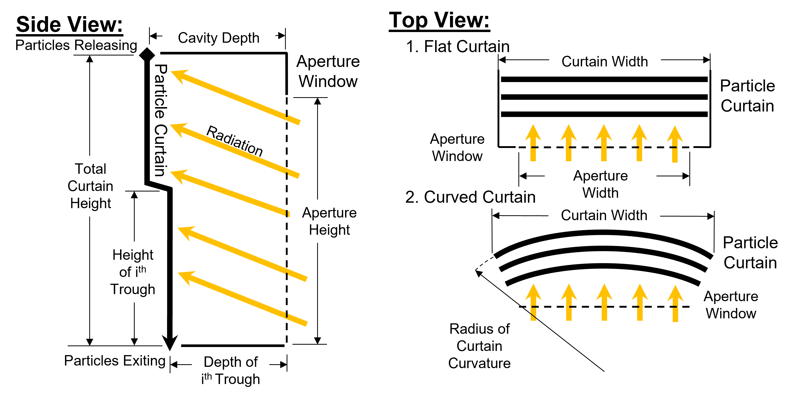
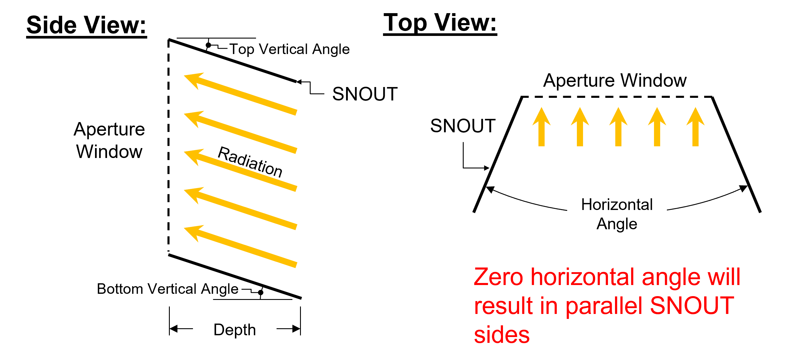
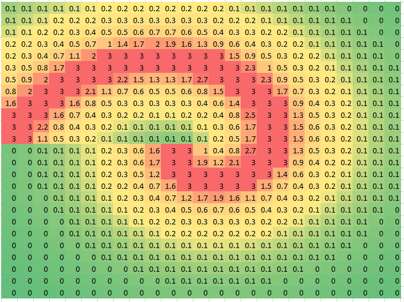
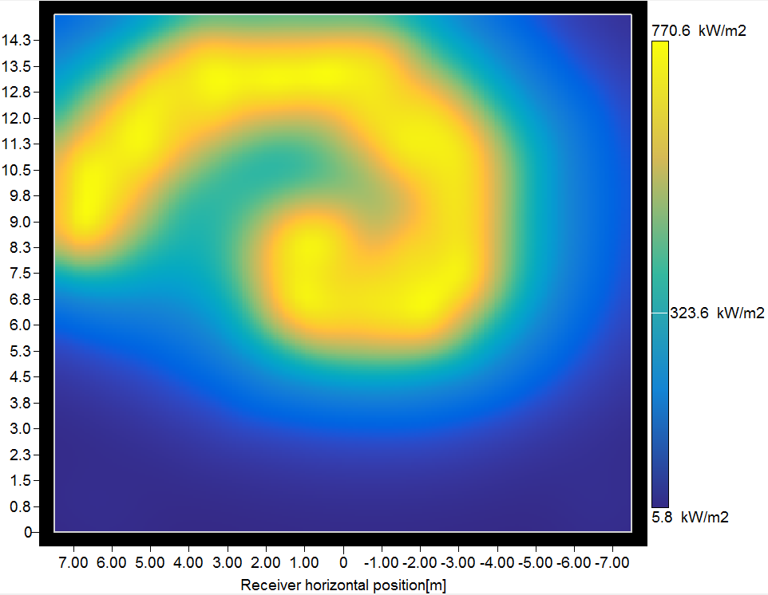
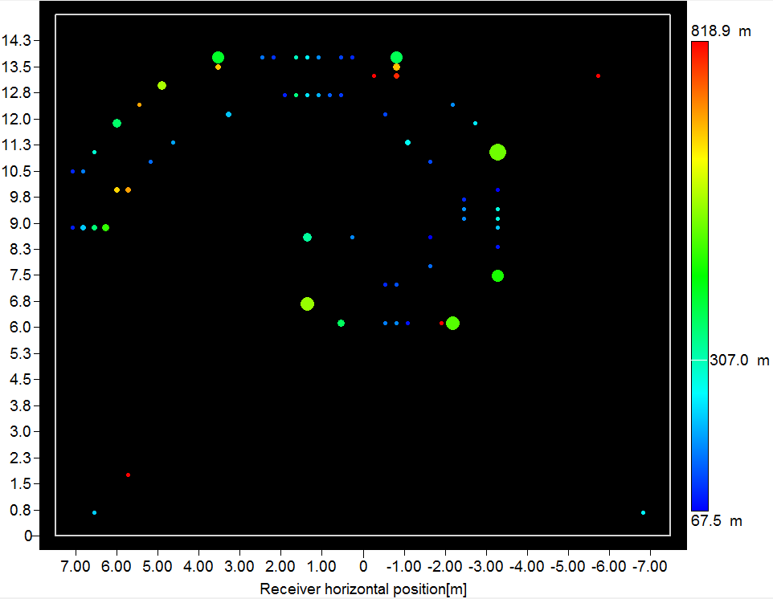

Receiver Template
Page Overview
The Receiver Template page allows you to specify geometry and properties of a receiver. Each receiver in the layout has a unique Receiver Template page with a name corresponding to that specified in the Receiver Template Management page.
Receiver Geometry
Receiver Type
External cylindrical
Select the receiver type to be "external cylindrical". The heat absorbing surface is defined as a cylinder of specified diameter and height. The centerline axis of the receiver is oriented at zenith.
Receiver diameter
The diameter of the receiver cylinder.
Flat plate
Select the receiver type to be "flat plate". The heat absorbing surface lies within a flat plane with a surface normal vector pointing toward the horizon at due North unless otherwise specified.
Receiver acceptance angles shape
You can limit the angular window from which the receiver can accept incoming flux. The angular limits effectively block reflected light from heliostats outside of the range.
The shape of the angular window can be either rectangular or elliptical.
Rectangular
Rectangular limits indicate that the receiver can accept reflected light from a rectangular profile when viewed from the perspective of the receiver. Because the limits are imposed from the perspective of the receiver, the rectangular acceptance range may be distorted when projected onto the plane of the ground.
The following layout provides an example of rectangular constraints for a flat plate receiver at a Receiver orientation elevation of -30 degrees, a Receiver horizontal acceptance angle of 60 degrees, and a Receiver vertical acceptance angle of 30 degrees.

Elliptical
Elliptical limits indicate that the receiver can accept reflected light from an elliptical profile when viewed from the perspective of the receiver. The ellipse is defined by a maximum width and maximum height. The Receiver horizontal acceptance angle specifies the maximum width of the ellipse, while the Receiver vertical acceptance angle specifies the maximum height.
The following layout provides an example of elliptical constraints for a flat plate receiver at a Receiver orientation elevation of -30 degrees, a Receiver horizontal acceptance angle of 60 degrees, and a Receiver vertical acceptance angle of 30 degrees.

Receiver horizontal acceptance angle
The angular extent in the horizontal direction from the perspective of the receiver from which incident light can be accepted. The angular span is symmetric about the normal vector from the surface of the receiver.
Receiver vertical acceptance angle
The angular extent in the vertical direction from the perspective of the receiver from which incident light can be accepted. The angular span is symmetric about the normal vector from the surface of the receiver.
Falling particle
Select the receiver type to be "falling particle". The heat absorbing surface is defined as a particle curtain within a cavity receiver.
Normalized particle curtain height
The particle curtain height normialized by the aperture height which is defined by the "Receiver height".
Normalized particle curtain width
The particle curtain width normialized by the aperture width which is defined by the "Receiver width".
Particle curtain entrance depth
The distance between the entrance of particles and the receiver's aperture. For curved curtain geometry, this parameter defines the maximum distance between the first particle curtain and the aperture.
Number of troughs
The number of "catch-and-release" troughs within the receivers. The number particle curtains is equal to the number of troughs plus one. This parameter defines the size of the normalized height and depth table.
Normalize height and depth
The trough normalized height and depth defines the location of each "catch-and-release" trough. The normalized height defines the height of the trough relative to the particle curtain total height. The normalized depth defines trough's release point (i.e., start of following curtain) relative to particle curtain entrance depth. These values must be in decending order.
Particle curtain type
The specific geometry of the curtain which can be "Flat" and "Curved." The curved curtain type requires a radius to define the curvature of the first curtain particles travel through. Succeeding curtains radii are defined by the normalized depth trough parameter so that all curtains have the same center point.

Is SNOUT enable?
Toggles on and off the SNOUT that extends outward from the receiver's aperture.
SNOUT depth
The distance from the front of the SNOUT window and the aperture.
Vertical SNOUT top angle
The angle defined by the ground and the SNOUT's top surface.
Vertical SNOUT bottom angle
The angle defined by the ground and the SNOUT's bottom surface.
Horizontal SNOUT angle
The angle defined by the left and right SNOUT surfaces. If this value is set to zero, then the SNOUT left and right surfaces are parallel.

Cavity
Select the receiver type to be "cavity". The heat absorbing surface is defined as a semi-circle of HTF panels behind a aperture.
Receiver height
The height of the receiver heat absorption surface. This parameter defines the aperture height for falling particle and cavity receiver types.
Receiver width
The width of the receiver heat absorption surface. This parameter defines the aperture width for falling particle and cavity receiver types.
Receiver orientation azimuth
The azimuthal orientation of the receiver. North=0, East=90, West=270.
** Currently, this is only implemented for Flat Plate receivers.
Receiver orientation elevation
The elevation orientation of the receiver. The normal vector from the plane of the receiver surface is tilted at this elevation angle.
** Currently, this is only implemented for Flat Plate receivers.
Receiver aspect ratio (H/W)
Calculated value indicating the aspect ratio of the receiver. The aspect ratio is defined as the height of the receiver divided by the width, where the width is equal to the specified with for a flat plate receiver or the specified diameter for a cylindrical receiver.
Receiver absorber area
The heat absorbing surface area of the receiver. For external cylindrical receivers, this is equal to the diameter times the height times Pi. For flat plate receivers, this is equal to the width times the height.
Receiver Position
You can specify an offset in the receiver position relative to the tower position using these inputs. The receiver is by default positioned at the (x=0, y=0) location relative to the heliostat coordinates.
Receiver positioning offset - X axis
Offset the receiver position in the East-West direction. A positive X-offset indicates displacement to the East.
Receiver positioning offset - Y axis
Offset the receiver position in the North-South direction. A positive Y-offset indicates displacement to the North.
Receiver positioning offset - Z axis
Offset the receiver position in the vertical direction. A positive Z-offset indicates displacement upward.
Receiver optical height
Calculated value indicating the optical height of the receiver including the receiver Z axis offset. The optical height is defined as the distance between the heliostat pivot points and the vertical center of the receiver. See Tower Optical Height for more information.
Optical Properties
Receiver thermal absorptance
The receiver thermal absorptance specifies the fraction of light that is absorbed (before radiative and convective losses) when striking the receiver. This value typically indicates the absorptivity of the receiver surface coating.
Allowable peak flux
The allowable peak flux is used only for optimization. This value specifies the maximum flux allowed at any point on the receiver surface. During optimization, if the allowable flux is exceeded, the algorithm may attempt to increase the receiver surface area.
Desired receiver flux profile
Note: This option is only available for Flat plate receivers and when using the Image Size Priority as the Heliostat aim point method on the Performance Simulation tab .
By default, the flux intensity on the surface of the receiver is constructed to be as uniform as possible while still accounting for spillage reduction measures. This option allows you to maintain this default assumption with the "Uniform" option or specify your own profile of desired relative intensity with the "User" option.
Uniform
The flux aiming algorithm will attempt to calculate heliostat aimpoints such that flux is approximately uniform across the surface of the receiver. The algorithm continues to enforce the offset of heliostat aimpoints from the edge of the receiver based on approximate image size and the values that you specify for Min. image offset from receiver edge on the Performance Simulation page.
User
The flux aiming algorithm will attempt to calculate heliostat aimpoints such that relative flux intensity matches the values entered in the flux profile table. The values entered in the table do not need to sum to unity or equal the desired dimensional flux values. Instead, the algorithm automatically determines the proportion of total flux that can impinge a particular location based on the proportion entered in the table. SolarPILOT does not interpolate values in the table, but simply considers that the flux at a given aimpoint should not exceed (in proportionality) the value entered in the table. In some cases, heliostat images are too large relative to the receiver to exactly achieve the desired profile, but the algorithm will attempt to add heliostats in a fashion that most closely approximates the desired profile.
The algorithm continues to enforce the offset of heliostat aimpoints from the edge of the receiver based on approximate image size and the values that you specify for Min. image offset from receiver edge on the Performance Simulation page.
The following example demonstrates construction of a novelty flux profile using the file import method.
Intensity values. Note that the total need not sum to unity.

SolarPILOT calculated flux intensity

Corresponding SolarPILOT aim point map

Thermal Losses
The receiver thermal losses include convective and radiative loss from the absorbing surface of the receiver and piping loss from the riser and downcomer. The thermal losses are estimated using a design-point value that you specify, the receiver absorptive area, and polynomials that scale the thermal losses with incident power level and wind velocity.
Thermal losses are used in two ways: First, the total thermal power delivered to the receiver must equal the specified Solar field design power on the Layout Setup page plus the design-point thermal loss plus the fractional loss due to the receiver thermal absorptance fraction. Therefore, the power delivered by the heliostats will typically exceed the specified Solar field design power.
Design point receiver thermal loss
You can set the baseline receiver thermal loss using this coefficient. The value indicates the losses from the receiver due to convection and radiation in kWt per square meter of receiver absorber area.
Load-based thermal loss adjustment
The load-based thermal loss adjustment allows you to specify how the thermal losses may vary with incident power on the receiver. The coefficients that you provide correspond to a 3rd-degree polynomial, where the argument is given by the power incident on the receiver at any particular time divided by the power on the receiver at the design point. The 0th order coefficient is a constant, the 1st order coefficient is a linear term, the 2nd order coefficient is a quadratic term, and the third order coefficient is a cubic term.
The thermal loss adjustments are used both to calculate the thermal loss at design and to calculate the thermal loss during the layout simulation when the DNI and heliostat field optical efficiency deviate from their reference conditions.
Wind-based thermal loss adjustment
The wind-based thermal loss adjustment allows you to specify how the thermal losses may vary with measured wind speed from a weather file. The coefficients that you provide correspond to a constant (0), linear (1), quadratic (2), and cubic (3) term. The coefficients multiply the argument, which is wind velocity raised to the corresponding power.
The thermal loss adjustments are used both to calculate the thermal loss at design and to calculate the thermal loss during the layout simulation when the wind velocity deviates from the reference condition (zero).
Design-point thermal loss
The design-point thermal loss is the total rate of thermal loss due to radiation and convection at reference conditions. The design-point thermal loss is calculated as follows:

The terms in this equation are:
(1) Design point receiver thermal loss
(2) Receiver surface area
(3) Result of the wind-based thermal loss adjustment polynomial evaluation
(4) Result of the load-based thermal loss adjustment polynomial evaluation
The design-point thermal loss is added to the Solar field design power and the fractional loss due to imperfect absorption (if applicable) to determine the total required power to be delivered by the heliostat field at the reference condition.
Receiver piping loss coefficient
The receiver piping loss coefficient determines the loss from the receiver piping in units of kWt per meter of tower height.
Receiver piping loss constant
The receiver piping loss constant determines the thermal losses from receiver piping that is constant and does not depend on system geometry.
Receiver piping loss
The receiver piping loss is a calculated value that indicates the total receiver piping loss, including constant loss and loss that scales with tower height. The receiver piping loss is calculated as follows:

where:
|
|
m |
Tower height |
|
|
kW/m |
Receiver piping loss coefficient |
|
|
kW |
Receiver piping loss constant |


Created with the Personal Edition of HelpNDoc: Write eBooks for the Kindle